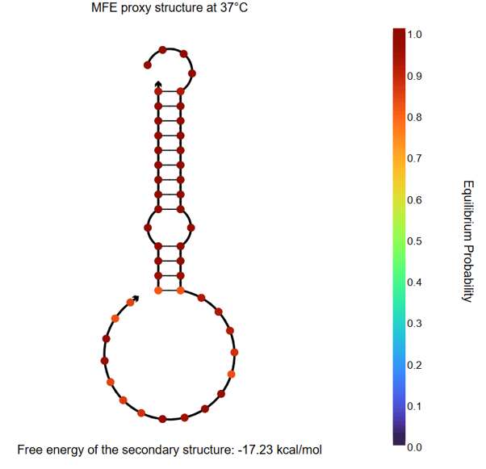

Overview of the design

Fig.1 もう少し簡潔に全体の流れが分かる図にしたい
Hungry Gel is composed of three types of DNA modules: DNA aptamers, entropy-driven circuits, and DNA hydrogels. In this paper, we describe in detail the roles and functions of each module, as well as how they cooperate to produce a series of responses.
DNA Aptamer
Fig.2 Aptamer Mechanism
DNAアプタマーは、標的細菌の表面分子に対して特異的に認識して結合し、シグナルを発生させる役割を担っています。 具体的にはアプタマーはハイドロゲルに固定され、他の分子とは反応せず、標的の細菌が接近するのを待っています。そして、標的細菌がアプタマーに接近するとアプタマーは標的細菌にくっつき、構造が変化します。これによって、アプタマーは自身の折りたたまれた立体構造を解き、それまで内部に隠されていた新たなDNA配列が露出します。 本研究では、このようなアプタマーの機構を想定した設計概念を示しており、実際のアプタマー配列の設計や組込み実験は行っていません。 今後、特定の標的に対応したシステムを構築する際には、選定したアプタマー配列に応じてEntropy Driven Circuitの塩基配列とそれに対応するDNAハイドロゲルモチーフの塩基配列を設計する必要があります。
DNA aptamers are short DNA or RNA sequences that bind strongly and specifically to particular molecules. By changing the sequence of the aptamer, the target bacteria can also be changed. In this experiment, the aptamer plays the role of reacting to the target bacteria and exposing a new DNA sequence.
In particular, the aptamer is immobilized in the hydrogel, waiting for the target bacteria to approach without reacting with other molecules. When the target bacteria approach the aptamer, the aptamer binds to the target bacteria and changes its structure. This causes the aptamer to unfold its folded three-dimensional structure, exposing a new DNA sequence that was previously hidden inside.
In this study, we propose this conceptual mechanism as a design framework; however, the actual design or incorporation of specific aptamer sequences was not conducted.
When constructing systems tailored to specific targets in the future, the aptamer sequence must first be selected based on the target. Subsequently, the DNA sequence of the Entropy Driven Circuit and the corresponding DNA hydrogel motif sequence need to be designed according to the selected aptamer sequence.
Entropy Driven Amplification Circuit
Fig.3 Entropy-driven Circuit
エントロピー駆動回路の役割は、アプタマーが生成する微弱な出力信号の濃度を、ハイドロゲル溶解に必要なレベルまで増幅することです。私たちは、Zhangらが提案した酵素を用いない増幅回路[1]をそのまま配列を変えずに利用し、後述するDNAハイドロゲルの配列をこの回路のOutput配列に合わせて設計した。
このエントロピー駆動回路は、Fig.3に示すように、CatalystとSubstrateがドメイン5を介して結合し(Intermediate1)、ドメイン4の可逆的なブランチマイグレーションで構造が変化したのち(Intermediate2)、ドメイン3だけでは結合が不安定になった結果SBが放出される(Intermediate3)。そして、FuelとIntermediate3がドメイン3を介して結合し(Intermediate4)、ドメイン2の可逆的なブランチマイグレーションで構造が変化し(Intermediate5)、Outputが放出される。ドメイン4で鎖置換反応が進行することで、catalystが放出される(Reaction Complete)。
この反応では、Catalystは消費されずに繰り返し利用されるため、少量のCatalystから多数のOutputが生成されます。
回路に用いられている配列はAppendixに記載しています。
The role of the entropy-driven circuit is to amplify the weak signal generated by the aptamer to a level sufficient to induce hydrogel dissolution. We employed the enzyme-free amplification circuit proposed by Zhang et al. [1] without modifying its sequences, and designed the DNA hydrogel sequences to match the output sequence of this circuit. The sequences used in this circuit are listed in the Appendix.
DNA Hydrogel
・DNA Sequence Design

Fig.4 DNA Hydrogel Four-arm Motif

Fig.5 Assembly of DNA Hydrogel Four-arm Motif
本プロジェクトでは、Fig.4に示す4分岐DNAハイドロゲルモチーフを採用した。各モチーフは上下左右の4本のアームを持ち、末端にスティッキーエンドを配置している。DNA配列はKandatsuら[2]を参考に設計し、低濃度でのゲル化を実現するためアーム長を34塩基とした。 スティッキーエンドは、長いドメインA（14塩基、赤）と短いドメインB（8塩基、緑）の2種類で構成され、ドメインAは上下に、ドメインBは左右に配置されている。両ドメインは相補的であり、モチーフ同士が順次結合して三次元ネットワークを形成する。なお、ドメインBを長く設計したのは、Output DNAが結合する際のトーホールドを提供するためである。 この突出した6塩基の領域がトーホールドとして機能し、Output DNAの結合開始点となる。 具体的な配列はAppendixに記載しています。
In this project, we adopted a four-armed DNA hydrogel motif as shown in Fig. 4. Each motif consists of four arms (top, bottom, left, and right), with sticky ends located at their termini. The DNA sequences were designed based on the study by Kandatsu et al. [2], with the arm length set to 34 nucleotides to enable gelation at low concentrations. The sticky ends consist of two types: a longer domain A (14 nt, shown in red) and a shorter domain B (8 nt, shown in green). Domains A are positioned on the top and bottom arms, while domains B are placed on the left and right arms. Because the two domains are complementary, neighboring motifs hybridize sequentially to form a three-dimensional network structure. Domain B was designed to be longer to provide a toehold for the binding of the output DNA. This 6-nucleotide overhang functions as a toehold and serves as the initiation site for output DNA binding. The detailed sequences are provided in the Appendix.
・Assembly Mechanism
Fig.6 DNA Hydrogel Network
Fig.5に示すように隣り合うモチーフはスティッキーエンドを介して結合し、大きなネットワーク構造を形成する。Fig.6に示すように、あるモチーフのドメインAと隣接モチーフのドメインBが相補的結合を形成している。この時、ドメインAよりも長いドメインBの一部(トーホールド領域)は1本鎖で露出したまま、ゲルネットワークを形成する。
As shown in Fig. 5, adjacent motifs are connected via their sticky ends to form a large network structure. As illustrated in Fig. 6, domain A of one motif hybridizes with domain B of a neighboring motif through complementary base pairing. In this configuration, a portion of domain B, which is longer than domain A (the toehold region), remains as a single-stranded overhang within the gel network.
・Dissolution Mechanism

Fig.7 Dissolution Mechanism
Fig.7のようにドメインBのトーホールド領域に、エントロピー駆動回路から生成されたOutput DNAが結合する。Output DNAはトーホールドを足掛かりとして鎖置換反応を開始し、ドメインAを押し出す。この置換反応はOutput DNAとドメインBの相補的な結合の方が、ドメインAとドメインBの部分的な結合よりも熱力学的に安定であるために進行する。この微視的な結合破壊が無数に起こることで、ハイドロゲルは溶解する。
As shown in Fig. 7, the output DNA generated from the entropy-driven circuit binds to the toehold region of domain B. The output DNA initiates a strand displacement reaction by hybridizing to the toehold and subsequently displaces domain A. This reaction proceeds because the hybridization between the output DNA and domain B is thermodynamically more stable than the partial hybridization between domains A and B. The accumulation of these microscopic strand displacement events ultimately leads to the dissolution of the hydrogel.
System Integration
本研究では、時間的制約を考慮し、まずHungry Gelシステムの中でもエントロピー駆動回路とDNAハイドロゲルの溶解を結びつけることが可能かを検証することに注力した。そのため、これら2つの要素に絞って配列設計を行った。 具体的には、エントロピー駆動回路から生成されるOutput DNAがDNAハイドロゲルの架橋結合を解離させることができるよう、ハイドロゲルモチーフの配列を設計した。将来的には、アプタマーが標的細菌と結合した際の構造変化により露出するDNA配列が、そのままエントロピー駆動回路のカタリスト配列として機能するよう統合する予定である。 配列設計にあたっては、NUPACKソフトウェアを用いて、エントロピー駆動回路とハイドロゲル配列間の意図しない結合を回避するようにして、設計を行った。この設計が実際に意図した動作を示すかを、実験により検証した。
Considering time constraints, this study focused first on testing whether the entropy-driven circuit could be linked to DNA hydrogel dissolution within the Hungry Gel system. Accordingly, sequence design was limited to these two components. Specifically, the hydrogel motifs were designed so that the output DNA generated by the entropy-driven circuit could dissociate the crosslinks in the DNA hydrogel. In the future, the system is intended to be integrated such that the DNA sequences exposed upon aptamer binding to target bacteria can directly function as catalyst sequences for the entropy-driven circuit. For sequence design, NUPACK software was used to avoid unintended interactions between the circuit and hydrogel sequences. The functionality of the designed system was then experimentally validated to confirm that it behaved as intended.
Reference
[1]David Yu Zhang, Andrew J. Turberfield, Bernard Yurke, and Erik Winfree(2007)”Engineering Entropy-Driven Reactions and Networks Catalyzed by DNA”.Science,318,pp.1121-1125
[2]Daisuke Kandatsu et al.(2016)”Reversible Gel-Sol Transition of a Photo-Responsive DNA Gel”.ChemBioChem,17.pp.1118-1121
Appendix
Sequence List
・DNA sequence used as a motif
| Name | Sequence (5'→3') |
|---|---|
| Strand1 | AAGTTTTGACCTTAGGGTTCCCCTTACGCATCTTCGCGGGTAGCTAAATTAAGATTGCTAGCGAGGCCGACGAAGGTGTAGG (82bp) |
| Strand2 | GGCCTCGCTAGCAATCTTAATTTAGCTACCCGCGACATCAAGCCACGGCGCTGAGAAAGATGGAACAACCTACACC (76bp) |
| Strand3 | TTGTTCCATCTTTCTCAGCGCCGTGGCTTGATGTCCTGATCTCTTTAAACGGAAGCTTTGACGAAACGGACGAAGGTGTAGG (82bp) |
| Strand4 | CGTTTCGTCAAAGCTTCCGTTTAAAGAGATCAGGAAGATGCGTAAGGGGAACCCTAAGGTCAAAACTTCCTACACC (76bp) |
・Entropy Driven Amplification Circuit
| Name (see entropy driven circuit diagram) | Sequence (5'→3') |
|---|---|
| Catalyst | CATTCAATACCCTACGTCTCCA |
| Signal | CCACATACATCATATTCCCTCATTCAATACCCTACG |
| Fuel | CCTACGTCTCCAACTAACTTACGGCCCTCATTCAATACCCTACG |
| output | CTTTCCTACACCTACGTCTCCAACTAACTTACGG |
Verification of the design using NUPACK
・Motif binding verification

Fig.8 NUPACK Simulation Result 1

Fig.9 NUPACK Simulation Result 2
[2]の論文では、アーム34塩基で同じ、長さ8塩基のスティッキーエンドのモチーフにおいて各strand50 μMでゲルができていたので、Nupackでも各DNAの濃度を50 μMでシミュレーションした。設計した4つのstrandを混ぜると、十字モチーフのみができる。狙い通りに設計できている。
According to reference [2], a hydrogel was formed with a motif consisting of 34-base arms and 8-base sticky ends when each strand was present at 50 μM. Accordingly, in our NUPACK simulations, the concentration of each DNA strand was set to 50 μM. When the four designed strands are mixed, only the four-arm motif is formed. The design is as intended.
・Long sticky end and short sticky end binding verification
Fig.19 NUPACK Simulation Result 3
Fig.11 NUPACK Simulation Result 4
スティッキーエンド同士(strand1:長い方、strand2:短い方で各50 μM)を混ぜると、スティッキーエンド同士で結合する。狙い通りの設計になっている。 さらに、スティッキーエンド同士の結合を、私たちの設計したモチーフと引用した論文[2]のモチーフで比較すると、私たちの設計の方が結合エネルギーが低くなっているので、私たちの設計したモチーフ同士がスティッキーエンドを介して十分に結合すると考えられる。
When the sticky ends (strand1: long, strand2: short, each at 50 μM) are mixed, they hybridize with each other. The design is as intended. Furthermore, comparing the binding energies of the sticky ends between our designed motif and the motif from the referenced paper [2], our design exhibits a lower binding energy, suggesting that our designed motifs can sufficiently hybridize via their sticky ends.
・Long sticky end and Output binding verification

Fig.12 NUPACK Simulation Result 5
